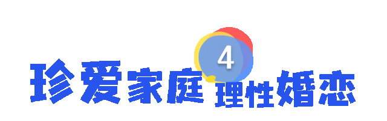
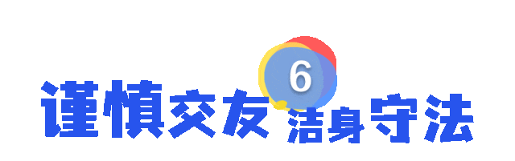

很多悲剧的发生，
从来都不是突如其来。
一句争执、一次纠纷、一场积怨，
若得不到及时化解，
任由矛盾升级、情绪失控，
就可能演变成无法挽回的极端事件。
生命只有一次，
纠纷本可化解，
学会冷静处事、理性维权，
是对自己和他人最大的负责。
防止冲动，拒绝悲剧，一起来学习↓↓↓
平日性情和善，醉酒易失理智，琐事便起争执，诸多刑案皆由酒后冲动引发。法治湖里提醒您：量力饮酒，拒劝酒、不酗酒，酒后不争辩、不斗狠。

与人交往矛盾冲突在所难免，遇事切莫执拗较真。法治湖里提醒您：遇纷争先平心静气，有矛盾可求助人民调解委员会，切莫意气用事。

婚恋与家庭纠纷是重大案件的高发诱因。夫妻日常琐事、情侣感情争执，一旦处理失当极易激化矛盾。法治湖里提醒您：夫妻相守，善待至亲； 情侣争执，静心沟通。
资金短缺优先向银行等正规机构借贷，坚决远离“高利贷”、私人高息贷与违规网贷。法治湖里提醒您：遇债务纠纷依法维权，切勿过激行事。

择友多看人品，常伴踏实良友，远离游手好闲之人。远离黄赌毒等不良嗜好，养成健康生活习惯。法治湖里提醒您：守住自身底线，少沾歪风陋习，安稳过日子，避开是非祸端。
邻里朝夕相伴，日常多包容礼让。法治湖里提醒您：遇见邻里拌嘴争执，热心上前劝导调和；若矛盾激化、出现打斗，贸然阻拦不可取，及时联系调解组织或报警，避免小事酿成祸端。
切莫沦为矛盾里的受害者，
也别做冷眼旁观的局外人，
守好本分、理性处事，
共建平安法治湖里，
共筑和谐宜居厦门。